CVE-2018-6389 유저 패치 적용 및 결과 검증
Table of Contents
1 유저 패치 적용
1.1 유저 패치 개요
- wp-login.php 에서 load 모듈을 사용하지 않도록 설정
- load-scripts.php에서 script-loader.php를 사용하지 않도록 설정
- load-styles.php에서 script-loader.php를 사용하지 않도록 설정
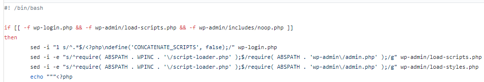
Figure 1: 유저 패치 스크립트 중 일부
1.2 유저 패치 실행
- https://github.com/Quitten/WordPress/blob/master/wp-dos-patch.sh 에서 패치 스크립트를 다운로드 받는다.
- 이 스크립트를 워드프레스가 설치된 곳의 루트 경로에 복사한다.
- 워드프레스 루트에서 다음 명령어를 실행
sudo bash wp-dos-patch.sh
패치가 성공한 모습이다.
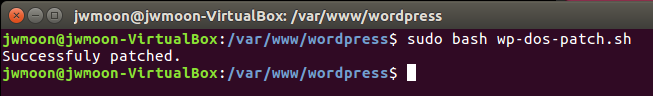
1.3 워드프레스 버전이 4.4 미만인 경우
버전이 4.4 이상인 경우는 다음 단계를 건너뛰어도 된다.
4.4 미만이라면 다음 세 개의 단계를 거친 후 스크립트를 실행한다.
테스트 환경의 워드프레스는 4.3.14 버전이다. 그 이하의 버전에서는 추가 단계가 필요할 수도 있다.
1.3.1 noop.php 생성
패치가 성공하려면 위의 세 개의 php파일 외에 wp-admin/includes/noop.php 파일이 존재해야 한다.
해당 파일은 워드프레스 버전 4.4(2015.12.8 릴리즈) 이후부터 제공되므로, 테스트환경(버전 4.3.15)에는 존재하지 않았다.
따라서 패치를 수행하려면 워드프레스 버전을 4.4이상으로 업그레이드 하던가 noop.php파일을 수동으로 만들어 두어야 한다.
이번 테스트에서는 아무런 내용이 없는 noop.php 파일을 만들어 두었다.
1.3.2 패치 스크립트에서 6번째 라인을 변경
4.4이하 버전에서는 아래 정규표현식이 제대로 작동하지 않는다. 따라서 다음과 같이 변경한다.
sed -i -e "s/^require( ABSPATH . WPINC . '\/script-loader.php' );$/require( ABSPATH . 'wp-admin\/admin.php' );/g" wp-admin/load-scripts.php 를
sed -i -e "s/^require(ABSPATH . WPINC . '\/script-loader.php');$/require( ABSPATH . 'wp-admin\/admin.php' );/g" wp-admin/load-scripts.php
로 변경한다.
변경내용 : ( ABSPATH . WPINC . '\/script-loader.php' ) 의 앞 뒤 스페이스 제거
1.3.3 load-scripts.php 와 load-styles.php 에서 필요없는 함수 제거
@ignore 로 선언된 함수들을 제거한다.
- load-scripts.php : 14라인부터 104라인까지
- load-styles.php : 14라인부터 83라인까지
이 단계를 생략하면 관리자 페이지에서 자바스크립트와 스타일시트를 사용할 수 없게 되므로 빼먹지 말고 실행하도록 한다.
1.4 소스코드 비교
소스코드가 어떻게 변했는지 살펴보자.
- wp-login.php
php 파일 상단에 define('CONCATENATE_SCRIPTS,false); 가 추가되었다.
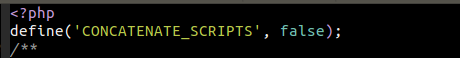
- load-scripts.php
require( ABSPATH . WPINC . '/script-loader.php' ); 가 require( ABSPATH . 'wp-admin/admin.php' ); 로 바뀐 것을 알 수 있다.
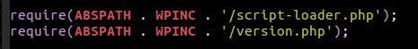
Figure 4: 패치 적용 전
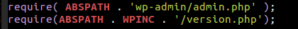
Figure 5: 패치 적용 후
- load-styles.php
require( ABSPATH . WPINC . '/script-loader.php' ); 가 require( ABSPATH . 'wp-admin/admin.php' ); 로 바뀐 것을 알 수 있다.
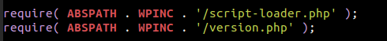
Figure 6: 패치 적용 전
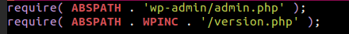
Figure 7: 패치 적용 후
2 결과 확인
패치 적용 후 동일한 요청(공격)을 보내본다.
2.1 관리자 로그인 전
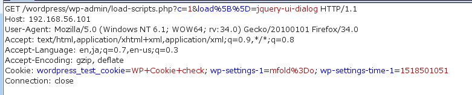
Figure 8: 자바스크립트 로드 요청
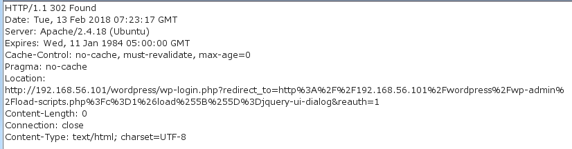
Figure 9: 자바스크립트 로드 응답, 302 리다이렉트 응답이 리턴된다.
2.2 관리자 로그인 후
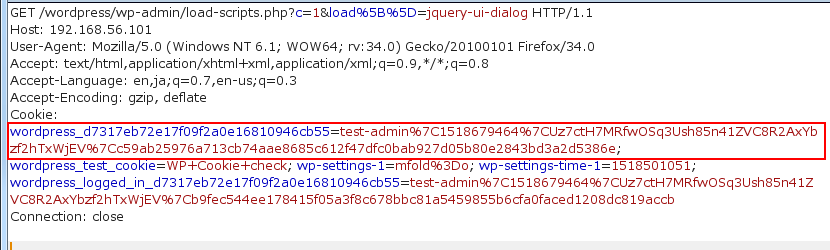
Figure 10: 동일한 자바스크립트 로드 요청, 세션ID가 설정되어 있다.
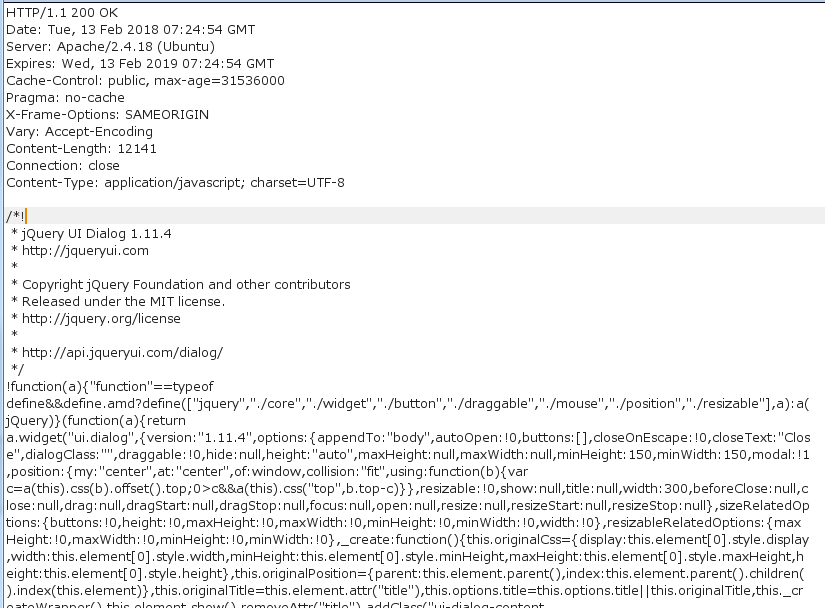
Figure 11: 자바스크립트 로드 응답, 정상적으로 자바스크립트가 로드되었다.
3 결론
이번 취약점은 다음 두 가지 조건 때문에 가능했다.
- 로그인하지 않아도 load 모듈(load-scripts.php, load-styles.php) 을 사용가능하다.
- load 모듈에서 script-loader.php 를 사용한다.
패치 적용 후 위의 두 가지 조건이 달성되지 않는 것을 확인하였다.
- 로그인 후에만 load 모듈을 사용할 수 있게 되었다.
- script-loader.php를 사용하는 부분이 사라졌다.
이를 통해 유저 패치로 이번 취약점 CVE-2018-6389 에 대한 대응이 된 것을 확인하였다.
다만 속도향상을 위한 script-loader.php 를 사용하지 않게되어 관리자 페이지에서 다소의 로딩 속도 하락이 예상된다.
4 진단에서의 활용
이번 연구를 워드프레스 사이트를 진단하는데 활용할 수 있다.
예를 들면, /wp-admin/load-scripts.php 혹은 /wp-admin/load-styles.php 를 인증없이 사용할 수 있는 경우 CVE-2018-6389 에 취약하다고 보고할 수 있을 것이다.